Простые схемы для начинающих-2
Схемы простейших электронных устройств для начинающих радиолюбителей. Простые электронные игрушки и устройства которые могут быть полезны для дома. Схемы построены на основе транзисторов и не содержат дефицитных компонентов.
Электромузыкальный инструмент
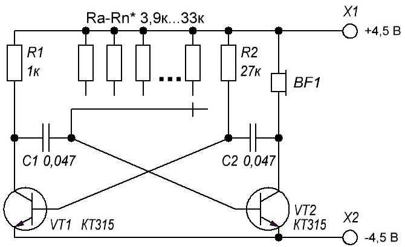
Рис. 1 - Схема электромузыкального инструмента.
Электромузыкальный инструмент на основе мультивибратора вырабатывает электрические импульсы прямоугольной формы, частота которых зависит от величины сопротивления Ra — Rn. При помощи подобного генератора можно синтезировать звуковую гамму в пределах одной-двух октав.
Звучание сигналов прямоугольной формы очень напоминает органную музыку. На основе этого устройства может быть создана музыкальная шкатулка или шарманка. Для этого на диск, вращаемый ручкой или электродвигателем, наносят по окружности контакты различной длины.
К этим контактам напаивают предварительно подобранные резисторы Ra — Rn, которые определяют частоту импульсов. Длина контактной полоски задает длительность звучания той или иной ноты при скольжении общего подвижного контакта.
Простая цветомузыка на светодиодах
Устройство цветомузыкального сопровождения с разноцветными светодиодами, так называемая «мигалка», украсит музыкальное звучание дополнительным эффектом.
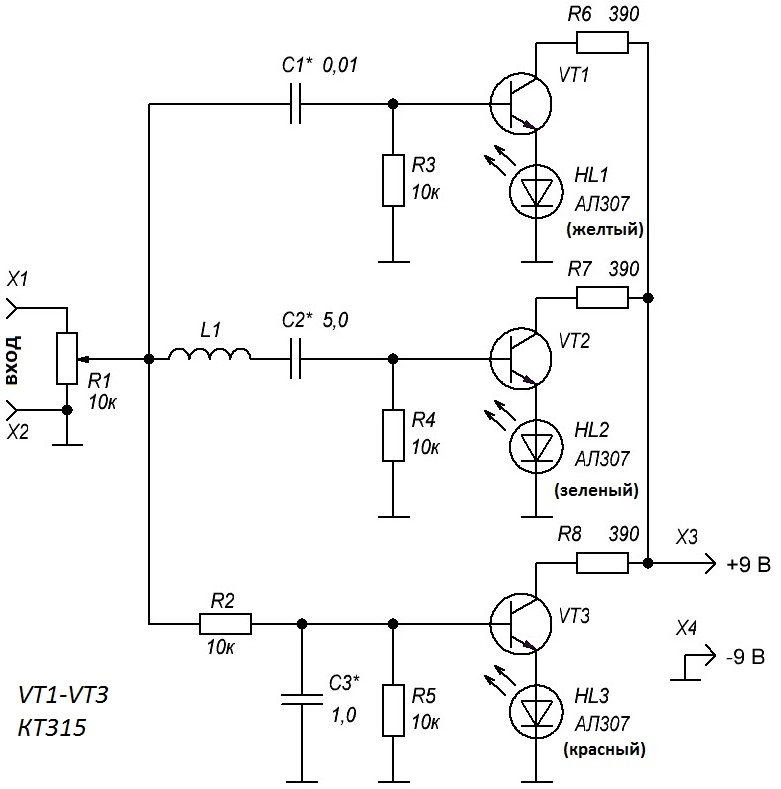
Рис. 2 - Простая цветомузыкальная установка на транзисторах и светодиодах.
Входной сигнал звуковой частоты простейшими частотными фильтрами разделяется на три канала, условно называемые низкочастотным (светодиод HL3 красного свечения); среднечастотным (светодиод HL2 зеленого свечения) и высокочастотным (желтый светодиод HL1).
Высокочастотная составляющая выделяется цепочкой С1 и R3. Среднечастотная компонента сигнала выделяется LC-фильтром последовательного типа (L1, С2). В качестве катушки индуктивности фильтра можно использовать старую универсальную головку от магнитофона, либо обмотку малогабаритного трансформатора или дросселя.
В любом случае при настройке устройства потребуется индивидуальный подбор емкости конденсаторов С1 — СЗ. Низкочастотная составляющая звукового сигнала беспрепятственно проходит через цепь R2, СЗ на базу транзистора VT3, управляющего свечением «красного» светодиода. Токи «высокой» частоты закорачиваются конденсатором СЗ, т.к. он имеет для них крайне малое сопротивление.
Электронная игрушка (угадай цвет) на светодиодах
Электронный автомат предназначен для отгадывания цвета включившегося светодиода.
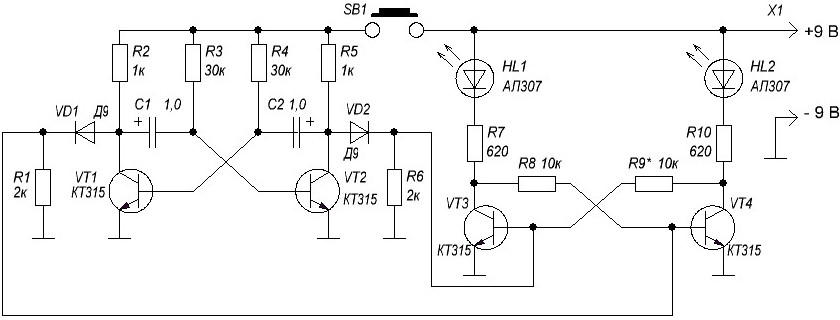
Рис. 3 - Принципиальная схема электронной игрушки на светодиодах.
Устройство содержит генератор импульсов — мультивибратор на транзисторах VT1 и VT2, связанный с триггером на транзисторах VT3, VT4. Триггер, или устройство с двумя устойчивыми состояниями, поочередно переключается после каждого из пришедших на его вход импульсов.
Соответственно, поочередно высвечиваются и разноцветные светодиоды, включенные в каждое из плеч триггера в качестве нагрузки. Поскольку частота генерации достаточно высока, мигание светодиодов при включении генератора импульсов (нажатии на кнопку SB1) сливается в непрерывное свечение. Если отпустить кнопку SB1, генерация прекращается. Триггер устанавливается в одно из двух возможных устойчивых состояний.
Поскольку частота переключений триггера была достаточно велика, заранее предсказать, в каком состоянии окажется триггер, невозможно. Хотя из каждого правила есть исключения. Играющим предлагается определить (предсказать), какой именно цвет появится после очередного запуска генератора.
Либо предлагается угадать, какой цвет загорится после отпускания кнопки. При большом наборе статистики вероятность равновесного, равновероятного высвечивания светодиодов должна приблизиться к значению 50:50. Для малого числа попыток это соотношение может не выполняться.
Электронная игрушка: у кого лучше реакция
Электронное устройство, позволяющее сопоставить скорость реакции двух испытуемых. Первым высвечивается индикатор — светодиод того, кто первый нажмет «свою» кнопку.
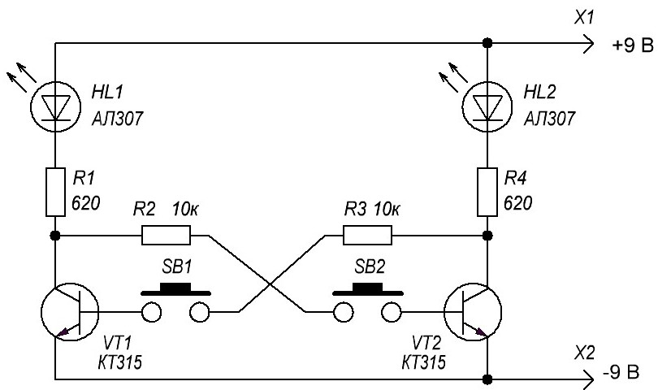
Рис. 4 - Принципиальная схема игрушки (у кого лучше реакция).
В основе устройства триггер на транзисторах VT1 и VT2. Для повторного тестирования скорости реакции питание устройства следует кратковременно отключить дополнительной кнопкой.
Самодельный фототир
Светотир позволяет не только играть, но и тренироваться.
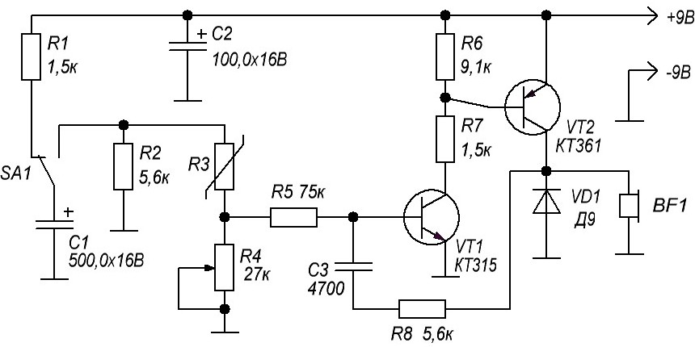
Рис. 5 - Принципиальная схема фототира.
Фотоэлемент (фотосопротивление, фотодиод — R3) направляют на светящуюся точку или солнечный зайчик и нажимают спусковой крючок (SA1). Конденсатор С1 разряжается через фотоэлемент на вход генератора импульсов, работающего в ждущем режиме. В телефонном капсюле раздается звук.
Если наводка неточна, и сопротивление резистора R3 велико, то энергии разряда недостаточно для запуска генератора. Для фокусировки света необходима линза.
Однокаскадный усилитель ЗЧ
Это простейшая конструкция, которая позволяет продемонстрировать усилительные способности транзистора Правда, коэффициент усиления по напряжению невелик — он не превышает 6, поэтому сфера применения такого устройства ограничена.
Тем не менее его можно подключить, скажем, к детекторному радиоприемнику (он должен быть нагружен на резистор 10 кОм) и с помощью головного телефона BF1 прослушивать передачи местной радиостанции.
Усиливаемый сигнал поступает на входные гнезда X1, Х2, а напряжение питания (как и во всех остальных конструкциях этого автора, оно составляет 6 В — четыре гальванических элемента напряжением по 1,5 В, соединенных последовательно) подается на гнезда ХЗ, Х4.
Делитель R1R2 задает напряжение смещения на базе транзистора, а резистор R3 обеспечивает обратную связь по току, что способствует температурной стабилизации работы усилителя.
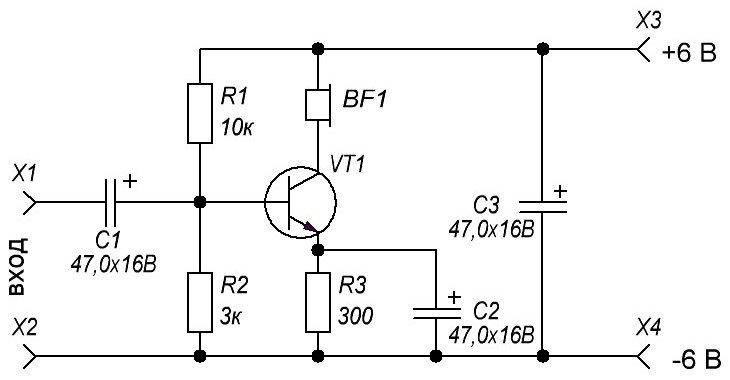
Рис. 6 - Схема однокаскадного усилителя ЗЧ на транзисторе.
Как происходит стабилизация? Предположим, что под воздействием температуры увеличился ток коллектора транзистора Соответственно увеличится падение напряжения на резисторе R3. В итоге уменьшится ток эмиттера, а значит, и ток коллектора — он достигнет первоначального значения.
Нагрузка усилительного каскада — головной телефон сопротивлением 60.. 100 Ом. Проверить работу усилителя несложно, нужно коснуться входного гнезда Х1 например, пинцетом в телефоне должно прослушиваться слабое жужжание, как результат наводки переменного тока. Ток коллектора транзистора составляет около 3 мА.
Двухкаскадный УЗЧ на транзисторах разной структуры
Он выполнен с непосредственной связью между каскадами и глубокой отрицательной обратной связью по постоянному току, что делает его режим независящим от температуры окружающей среды. Основа температурной стабилизации — резистор R4, работающий аналогично резистору R3 в предыдущей конструкции
Усилитель более «чувствительный” по сравнению с однокаскадным — коэффициент усиления по напряжению достигает 20. На входные гнезда можно подавать переменное напряжение амплитудой не более 30 мВ, иначе возникнут искажения, прослушиваемые в головном телефоне.
Проверяют усилитель, прикоснувшись пинцетом (или просто пальцем) входного гнезда Х1 — в телефоне раздастся громкий звук. Усилитель потребляет ток около 8 мА.
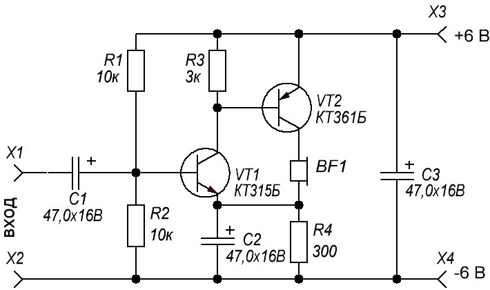
Рис. 7 - Схема двухкаскадного усилителя ЗЧ на транзисторах разной структуры.
Эту конструкцию можно использовать для усиления слабых сигналов например, от микрофона. И конечно он позволит значительно усилить сигнал ЗЧ, снимаемый с нагрузки детекторного приемника.
Двухкаскадный УЗЧ на транзисторах одинаковой структуры
Здесь также использована непосредственная связь между каскадами, но стабилизация режима работы несколько отличается от предыдущих конструкций.
Допустим, что ток коллектора транзистора VТ1 уменьшился Падение напряжения на этом транзисторе увеличится что приведет к увеличению напряжения на резисторе R3, включенном в цепи эмиттера транзистора VТ2.
Благодаря связи транзисторов через резистор R2, увеличится ток базы входного транзистора, что приведет к увеличению его тока коллектора. В итоге первоначальное изменение тока коллектора этого транзистора будет скомпенсировано.
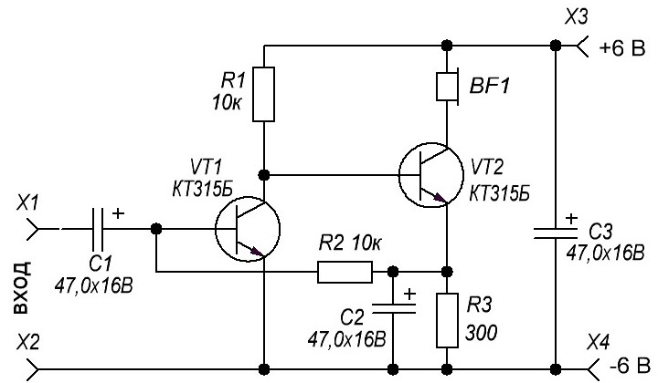
Рис. 8 - Схема двухкаскадного усилителя ЗЧ на транзисторах одинаковой структуры.
Чувствительность усилителя весьма высока — коэффициент усиления достигает 100. Усиление в сильной степени зависит от емкости конденсатора С2 — если его отключить, усиление снизится. Входное напряжение должно быть не более 2 мВ.
Усилитель хорошо работает с детекторным приемником, с электретным микрофоном и другими источниками слабого сигнала. Ток, потребляемый усилителем — около 2 мА.
Двухтактный усилитель мощности ЗЧ на транзисторах
Он выполнен на транзисторах разной структуры и обладает усилением по напряжению около 10. Наибольшее входное напряжение может быть 0,1 В.
Усилитель двухкаскадный первый собран на транзисторе VТ1 второй — на VТ2 и VТЗ разной структуры. Первый каскад усиливает сигнал ЗЧ по напряжению причем обе полуволны одинаково. Второй — усиливает сигнал по току, но каскад на транзисторе VТ2 “работает” при положительных полуволнах, а на транзисторе VТЗ — при отрицательных.
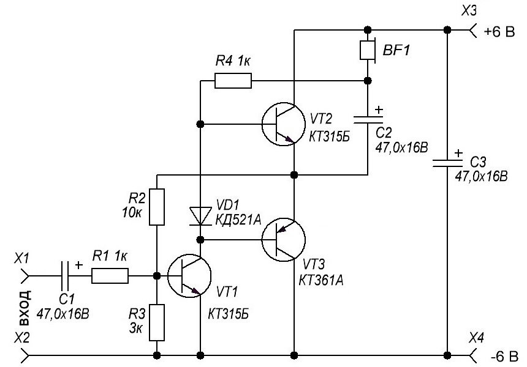
Рис. 9 - Двухтактный усилитель мощности ЗЧ на транзисторах.
Режим по постоянному току выбран таким что напряжение в точке соединения эмиттеров транзисторов второго каскада равно примерно половине напряжения источника питания.
Это достигается включением резистора R2 обратной связи Ток коллектора входного транзистора, протекая через диод VD1, приводит к падению на нем напряжения. которое является напряжением смещения на базах выходных транзисторов (относительно их эмиттеров), — оно позволяет уменьшить искажения усиливаемого сигнала.
Нагрузка (несколько параллельно включенных головных телефонов либо динамическая головка) подключена к усилителю через оксидный конденсатор С2.
Если усилитель будет работать на динамическую головку (сопротивлением 8 -.10 Ом), емкость этого конденсатора должна бы ь минимум вдвое больше Обратите внимание на подключение нагрузки первого каскада — резистора R4 Его верхний по схеме вывод соединен не с плюсом питания, как это обычно делается, а с нижним выводом нагрузки.
Это так называемая цепь вольтодобавки, при которой в базовую цепь выходных транзисторов поступает небольшое напряжение ЗЧ положительной обратной связи, выравнивающее условия работы транзисторов.
Двухуровневый индикатор напряжения
Такое устройство можно использовать, например, для индикации “истощения” батареи питания либо индикации уровня воспроизводимого сигнала в бытовом магнитофоне. Макет индикатора позволит продемонстрировать принцип его работы.
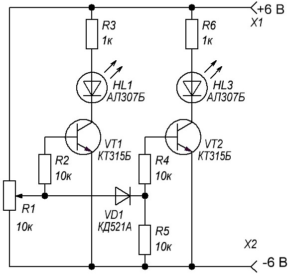
Рис. 10 - Схема двухуровневого индикатора напряжения.
В нижнем по схеме положении движка переменного резистора R1 оба транзистора закрыты, светодиоды HL1, HL2 погашены. При перемещении движка резистора вверх, напряжение на нем увеличивается. Когда оно достигнет напряжения открывания транзистора VТ1 вспыхнет светодиод HL1
Если продолжать перемещать движок. наступит момент, когда вслед за диодом VD1 откроется транзистор VТ2. Вспыхнет и светодиод HL2. Иными словами, малое напряжение на входе индикатора вызывает свечение только светодиода HL1 а большее обоих светодиодов.
Плавно уменьшая входное напряжение переменным резистором, заметим что вначале гаснет светодиод HL2, а затем — HL1. Яркость светодиодов зависит от ограничительных резисторов R3 и R6 при увеличении их сопротивлений яркость падает.
Чтобы подключить индикатор к реальному устройству, нужно отсоединить верхний по схеме вывод переменного резистора от плюсового провода источника питания и подать контролируемое напряжение на крайние выводы этого резистора. Перемещением его движка подбирают порог срабатывания индикатора.
При контроле только напряжения источника питания допустимо установить на месте HL2 светодиод зеленого свечения АЛ307Г.
Трехуровневый индикатор напряжения
Он выдает световые сигналы по принципу меньше нормы — норма — больше нормы. Для этого в индикаторе использованы два светодиода красного свечения и один — зеленого.
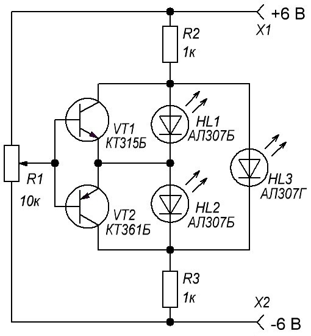
Рис. 11 - Трехуровневый индикатор напряжения.
При некотором напряжении на движке переменного резистора R1 (напряжение в норме) оба транзистора закрыты и (работает) только зеленый светодиод HL3. Перемещение движка резистора вверх по схеме приводит к увеличению напряжения (больше нормы) на нем открывается транзистор VТ1.
Светодиод HL3 гаснет, а HL1 зажигается. Если движок перемещать вниз и уменьшать таким образом напряжение на нем (‘меньше нормы”) транзистор VТ1 закроется, а VТ2 откроется. Будет наблюдаться такая картина: вначале погаснет светодиод HL1, затем зажжется и вскоре погаснет HL3 и в заключение вспыхнет HL2.
Из-за низкой чувствительности индикатора получается плавный переход от погасания одного светодиода к зажиганию другого еще не погас полностью например, HL1, а уже зажигается HL3.
Триггер Шмитта
Как известно это устройство используется обычно для преобразования медленно изменяющегося напряжения в сигнал прямоугольной формы. Когда движок переменного резистора R1 находится в нижнем по схеме положении транзистор VТ1 закрыт.
Напряжение на его коллекторе высокое, в результате транзистор VТ2 оказывается открытым а значит, светодиод HL1 зажжен На резисторе R3 образуется падение напряжения.
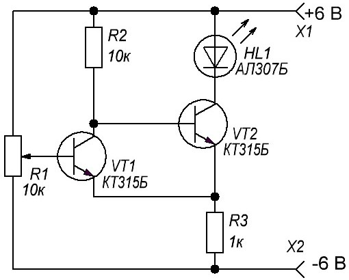
Рис. 12 - Простой триггер Шмитта на двух транзисторах.
Медленно перемещая движок переменного резистора вверх по схеме, удастся достичь момента когда произойдет скачкообразное открывание транзистора VТ1 и закрывание VТ2 Это случится при превышении напряжения на базе VТ1 падения напряжения на резисторе R3.
Светодиод погаснет. Если после этого перемещать движок вниз триггер возвратится в первоначальное положение — вспыхнет светодиод Это произойдет при напряжении на движке меньшем чем напряжение выключения светодиода.
Ждущий мультивибратор
Такое устройство обладает одним устойчивым состоянием и переходит в другое только при подаче входного сигнала При этом мультивибратор формирует импульс своей длительности независимо от длительности входного. Убедимся в этом проведя эксперимент с макетом предлагаемого устройства.
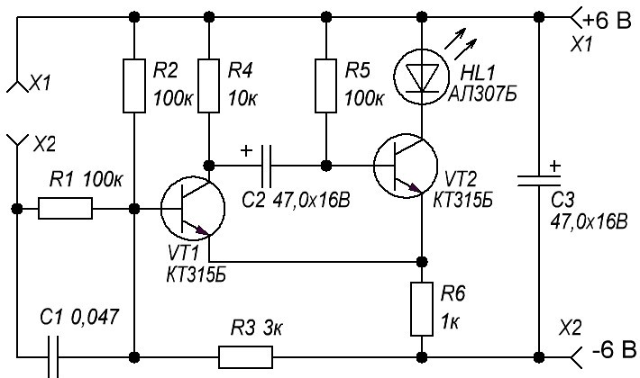
Рис. 13 - Принципиальная схема ждущего мультивибратора.
В исходном состоянии транзистор VТ2 открыт, светодиод HL1 светится. Достаточно теперь кратковременно замкнуть гнезда Х1 и Х2 чтобы импульс тока через конденсатор С1 открыл транзистор VТ1. Напряжение на его коллекторе снизится и конденсатор С2 окажется подключенным к базе транзистора VТ2 в такой полярности, что тот закроется. Светодиод погаснет.
Конденсатор начнет разряжаться ток разрядки потечет через резистор R5, удерживая транзистор VТ2 в закрытом состоянии Как только конденсатор разрядится, транзистор VТ2 вновь откроется и мультивибратор перейдет снова в режим ожидания.
Длительность формируемого мультивибратором импульса (продолжительность нахождения в неустойчивом состоянии) не зависит от длительности запускающего, а определяется сопротивлением резистора R5 и емкостью конденсатора С2.
Если подключить параллельно С2 конденсатор такой же емкости, светодиод вдвое дольше будет оставаться в погашенном состоянии.
Источники
radioslon.chernykh.net - Простые имитаторы звуков, световые эффекты, игрушки (одиннадцать схем)
radioslon.chernykh.net - Восемь простых схем на транзисторах для начинающих радиолюбителей
Литература:
Шустов М.А. Практическая схемотехника (Книга 1), 2003 год.